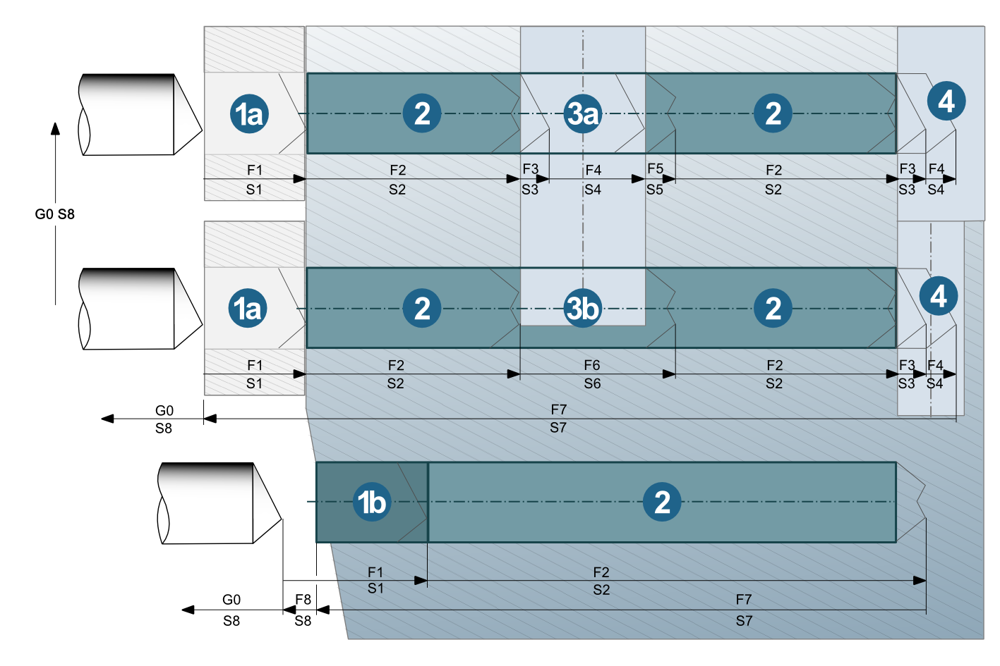
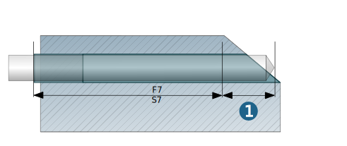

Process
The process sequence of the tool is controlled in eight phases. For each phase, the Spindle orientation, Feedrate, spindle speed (RPM), Coolant, and Dwell time can be defined.
Phases
Spindle: Use CW and CCW to define the spindle orientation or Stop to define a spindle stop.
Note
For threading into the pilot hole (phase 1) and when retracting to the start of the pilot hole or to the clearance distance (phase 7/phase 8), the orientation of the spindle is set to CW by default.
Feedrate / RPM: The values for RPM and Spindle speed are taken from the definition of the tool in the OPEN MIND tool database. They correspond to the values set in the job definition on the Tool tab under Cutting profile. To adjust both values, enter the % value in the Feedrate and %RPM columns.
Note
To manually overwrite the values for Feedrate and RPM that are preset in the tool definition, right-click the value in the required Phase, select the Disconnect option, and enter the required value.
The value is now displayed in bold , the definition in the tool and the adjustments in the Feedrate / %RPM column are no longer taken into account.
To establish a new connection between feedrate/spindle speed and % values and to the tool definition, right-click the modified value and select the Link option.
Coolant: Define the coolant for each phase.
Dwell time: Define the dwell time in seconds for each phase.
Movement sequence of the tool
|  |
Feedrates and spindle speeds assigned to the tool during its movement:
(1a) Guide sleeve: rapid movement up to the start of the guide sleeve; with F1 and S1 until the end of the guide sleeve.
(1b) Pilot hole: rapid movement up to the clearance distance. With F1/S1 until the end of the pilot hole.
(2) With F2/S2 until the start of the crosshole.
(3a) Crosshole: from the start of the crosshole until the end of material removal with F3/S3. For crossholes with F4/S4. From the start of material removal until full material removal with F5/S5. (3b) Crosshole: for continuous material removal in a crosshole: until the end of the crosshole/material removal with F6/S6.
(4) Outlet for a through hole/crosshole) with F3/S3 or F4/S4.
Retract movement: to the clearance distance or the start of the guide sleeve in F7/S7.
Linking movements: between drill holes with F8/G0 and S8 (reduced feedrate/spindle speed).
Additional feedrate settings
Stepwise feedrate increase: Enable the option to gradually increase the feedrate values between F1 and F2, F6 and F2, as well as F4 and F2. The Length defines the total length of the stepwise feedrate increase (default = tool diameter * 1.5). The Number of steps determines how often the increase takes place in the defined Length.
Process: end of hole
Dwell time: Time in seconds for which the drill remains on the hole bottom to cut material free.
Incremental retract: Define a retract movement to retract the tool at the end of the dwell time on the hole bottom in a defined retract length and with a defined Retract feedrate. This prevents possible damage to the tool during direct retraction with F7 from the hole bottom.
Retract length: (1) Specify the length of the incremental retract movement.
Retract feedrate: Specify the feedrate of the incremental retract movement.
|  |